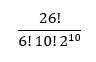
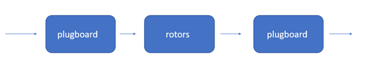
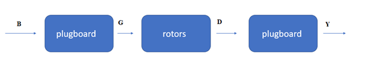
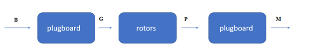
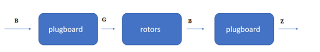

Inferential statistics have many real-world technological and engineering applications. The focus of this work is how inferential statistics shaped the outcome of the Second World War. Inferential statistics played a role in the United Kingdom’s code-breaking research. Scholars in the United Kingdom used statistics to understand German encrypted messages produced from Enigma machines. This work will cover what Enigma machines were and how statistical principals were used to break the codes.
The Enigma, as shown in Appendix A, was a German cipher machine used in World War II (Bundesarchiv Bild, 2016). In looking at Appendix A, the part where the hands are typing on the typewriter-style keys is where the person would write the message. The letters above the keys light up. This section shows what letter goes in the code. For example, if someone were to push the letter s on the typewriter section this section might light up with the letter h. However, if that person were to push s again it would not come out h again. It would come out a different letter. Before such a machine, the code would have stayed the same uniform throughout the writing. S would have stayed h through the entire message. An example of this is the style of code Anne Lister devised and used in her Regency-era diaries. Her writings steadily utilize a code that combines letters, mathematical symbols, punctuation, and zodiac symbols that during her lifetime concealed her innermost thoughts and feelings.
Though it may seem strange that pushing the same letter twice would produce different symbols, it was cyphertext that was part of a very complex system. The Enigma device was battery powered. If one looks at Appendix A, the top right of the board has a plate that is bolted down. The battery was under this plate. Next to this is three rotors. Professor Brailsford also is known as Computerphile (2014) explained that these rotors have 26 letters engraved around their circumference. The rotors are responsible for the cyphertext. The rotor on the right moves the fastest, and after so many clicks, the next rotor is nudged, and so on. In between each of the rotors is an input stud and an output stud. Looking between each of the rotors is like looking at a jumble of wires. Each input stud is wired to an output stud. At the beginning of the Enigma’s lifecycle, there were three types of rotor wheels, and each one had its own configurations. A style one rotor would never be configured in a fashion identical to wheel two or three. Computerphile (2014) explained that the number of possible configurations is 3! Upon receiving a message, the Germans would reverse the circuit to decode the ciphertext. The circuit then worked in reverse. The code was entered on the typewriter portion, and the plain text letter showed up on the section that lit up.
Things could get even more complex and unique because the front of the Enigma looked like an old-style telephone operator board. This was called a plugboard (Appendix B). Custom wiring configurations could be devised here. The Germans had codebooks to create and decipher these messages.
During World War II Britain’s best minds utilized their skills for the war effort at Bletchley Park. Bletchley’s role was that of codebreaking. There were rooms filled with linguists, mathematicians, chess champions, and people recruited from an incredibly tricky Daily Telegraph crossword competition (Central Intelligence Agency, 2015). The computer pioneer Alan Turing was a crucial individual at Bletchley. While he is often remembered now for devising the Turing Test, it was his math skills that were imperative to this cryptological study.
Throughout the lifecycle of the Enigma, there were five rotor wheels. Alan Turing used statistics to make sense of the thousands of possible configurations that the Enigma was capable of. James Grime, also known on YouTube as the Numberphile (2013) explains that there are 60 ways that one could arrange three rotors from a selection of five rotors. This number comes from the idea that on the first reach in there are five rotors, then four, then three, which turns into the equation 5 * 4 * 3 = 60. As far as starting positions go, a similar idea is followed. Each wheel has 26 starting positions, so 26 * 26 * 26 = 17,576 possible starting positions. That is just assuming rotor use and not custom plug board configurations which made things extra jumbled. On the plugboard there ten cables that connect two letters and make a pair. Numberphile (2013) explained that the following formula is used to understand the complexity of the plugboard scrambling.
This breaks down to 150,783,274,937,250. The Numberphile (2013) found that with the rotors and the plugboard that there were 158,962,555,217,826,360,000 possible combinations. With so many possible configurations approaching the Enigma statistically involved probability and elements of hypothesis testing.
Turing approached probability using an urn model, and the name of the approach is now called the Good-Turing approach. It is an empirical Bayes method. The probability mathematics focused on the expected frequency of words within a population of words. This concept is that the expected population frequency could be thought of as r and expressed in the formula (r + 1)nr+1/(Nnr) (Mardia and Cooper, 2012). N is the population, and nr represents distinct words represented exactly r times in the sample. Specifically, the formula is finding the probability that the next word is one that has not been sampled yet. A confidence interval was applied, such as 98% to state the minimum size of the vocabulary. Meaning 98% of the words were likely to show up in a dictionary. Turing did throw on a non-zero probability in case if some words had a letter grouping that had not shown up yet in his data.
The probability of a letter repeating had to be thought of as well. This is the probability that two letters in different places will represent the same letter of the alphabet and can be expressed as Σp_1^2. In a hypothetical situation, h occurs v_h times within a sample N. Good (1979) states that Turing plugged the concept into Σ v_h (v_h - 1)/{N(N - 1)}.
The hypothesis testing elements relate directly to the roles of engineering and technology. The Enigma had a critical flaw in its design. That flaw was that a letter was never itself. If someone pushed t, it was never encoded as t. Turing and others at Bletchley knew certain words that commonly showed up in the messages. The flaw of the Enigma and knowing certain words that commonly showed up helped Turing and Gordon Welchman create and code a machine. It was called the Bombe and could decrypt messages in about 20 minutes (Numberphile, 2013). The Bombe focused on deciphering the plugboard settings. As mentioned before the plugboard allowed for the configuration of 10 pairs of letters. Numberphile’s (2013) explanation of how the Bombe worked sounded like the beginning of a hypothesis test. Someone at Bletchley would create a null hypothesis. In a hypothetical scenario, this is b equals g, or b is connected to g on the plugboard. The alternate hypothesis is that b does not equal g, or b is not connected to g on the plugboard.
The above set up is as far as the hypothesis test concept goes. Both Numberphile (2013) and Good (1979) found that the null hypothesis was accepted or rejected not around a significance level but rather through a search tree methodology. This is a concept from graph theory. The search tree deduces connections through accepting and rejecting data. The tree looks something like this.
In the mock scenario, the null hypothesis is b is equal to g. They are plugged into the first part of the tree. G has to go through the rotors and then becomes d and comes out y. The updated tree now looks like this.
Through this, it is now deduced that d and y share a connection on the plugboard. Next, in the hypothetical scenario, the below image happens. From this, it can be deduced that P and M are connected on the plugboard.
Next, in the hypothetical scenario, this image is the outcome.
This image is showing that the null hypothesis is incorrect. B cannot be simultaneously connected to both g and z at the same time. A contradiction is apparent. B is not wired to g. Instead, b is wired to z. One would have to run b through all 26 options. If all 26 options presented a contradiction, then the rotor position was set at an incorrect interval. Turing used algorithmic logic to save time. From the contradiction it is apparent that D and Y and P and M are not connected and therefore would not be tested. The results from the contradictions helped speed up the process, as there is no point in testing a connection that has already been deemed as false.
Turing and others at Bletchley used statistics in the real-world event of understanding the complex German Enigma cyphertext machine. Specifically, their work was a cross between inferential statistics and graph theory. Due to one vital flaw, they cracked a very complex code. The result of their study and the creation of the Bombe saved lives and impacted history. By knowing messages, Allied forces could then sabotage Axis activity. While many white paper publications show that statistics shape our understanding and engineering of technology it is remarkable to look at the story of the Enigma and see that the study can save lives and change the course of history. Understanding inferential statistics have vital real-world implications.
Bundesarchiv Bild. (2016, December 7). Enigma in use, 1943. Retrieved from https://commons.wikimedia.org
Central Intelligence Agency. (2015, April 10). The Enigma of Alan Turing. Retrieved from https://www.cia.gov/news-information/featured-story-archive/2015-featured-story-archive/the-enigma-of-alan-turing.html
Computerphile. (2014, November 28). Turing's Enigma Problem (Part 1) [Video file]. Retrieved from https://www.youtube.com/watch?v=d2NWPG2gB_A
Good, I. J. (1979). Studies in the history of probability and statistics. XXXVII A. M. Turing's statistical work in World War II. Biometrika, 66(2), 393. doi:10.2307/2335677
Lord, B. (2005, February 16). plugboard of an Enigma machine [photograph]. Retrieved from https://commons.wikimedia.org
Mardia, K., & Cooper, B. (2012). Alan Turing and enigmatic statistics. Boletim ISBrA, 5(2), 2-6.
Numberphile. (2013, January 10). 158,962,555,217,826,360,000 (Enigma Machine) [Video file]. Retrieved from https://www.youtube.com/watch?v=G2_Q9FoD-oQ
Numberphile. (2013, January 14). Flaw in the Enigma code [Video file]. Retrieved from https://www.youtube.com/watch?v=V4V2bpZlqx8